CNS part 7: tendon reflexes, reinforcement, clonus, Hoffmann's sign
Storyboard for review. Every still is a frame of the animation itself (the same timeline, poses and cameras), rendered in software at 16 samples, with captions on. Below the panels: the review panels a to g, with every gap measured on the meshes.
Build (round 3 approved): the two fixes and the checks
- Supinator. Index and middle slightly curled so both tips rest on the skin: index tip 0.77 mm, middle tip 0.62 mm, thumb 0.03 mm; side by side along the radial border about 5 cm above the wrist; the hammer on the back of the two fingers.
- Triceps. One panel per side at the strike frame (r_x_tri, r_x_triL) marks the olecranon TIP, the strike point and the hammer head's centre: head centre 3.22 cm (right) and 3.22 cm (left) proximal to the tip, toward the shoulder.
- Cuts. 20 hard cuts, all on the 1/15 s pose grid, camera / patient / examiner on the same frame: allOk (checks/transitions/, a 1/30 s strip per cut).
- Home. first frame = last frame = the README CNS home shot: pixel-identical.
- Per-frame scan of all 2911 frames (checks/report.json): 0 unexplained flags, 286 explained. Closest lens approach 35.7 cm; examiner at most 31 % of the frame (an upper bound, hidden parts counted). The explained ones:
- Biceps reflex R: at the peak of the jerk the closing elbow crease presses up to 7 mm into the examiner's thumb pad on the tendon (as a real thumb is squeezed when the biceps contracts); 0.2 s. (3 frames, 9.27-9.40 s)
- Biceps reflex L: the same squeeze of the examiner's thumb pad (mirror). (3 frames, 12.27-12.40 s)
- Supinator L: just after the strike the hammer hand brushes the other forearm (1.8 mm) as both ride the reflex. (1 frames, 19.87-19.87 s)
- Triceps: the examiner's hand arriving at his wrist grazes it (about 2 mm) as it closes round it. (1 frames, 25.47-25.47 s)
- Reinforced biceps reflex: the same squeeze of the examiner's thumb pad. (3 frames, 37.47-37.60 s)
- Knee support arriving: the forearm slides under his raised knees and grazes the back of a knee (about 3 mm) for a few frames. (8 frames, 44.40-44.87 s)
- Knee support (approved pose since round 1): the elbow end of the examiner's forearm presses up to 23 mm into the soft mattress beside his right knee while it holds both knees (level, it would pass 30 mm through his knees). (179 frames, 44.80-56.67 s)
- Knee support leaving: the forearm lifts out from under his knees and grazes the backs of the knees (up to 3 mm) for a few frames. (9 frames, 56.67-57.40 s)
- Ankle jerk: the palm arriving on the sole of the turning foot grazes it (up to 5 mm) for a frame or two. (1 frames, 59.40-59.40 s)
- Ankle jerk: as the examiner turns the leg out, the palm on his sole brushes his other shin (3 mm) for a frame. (1 frames, 60.20-60.20 s)
- Hoffmann R: the examiner's hands arriving under his palm / at his fingertip as his hand rises graze it (2-4 mm) for a frame or two. (3 frames, 86.33-87.13 s)
- Hoffmann R flick: the pinch hand dips with his fingertip and brushes the supporting forearm (up to 2.9 mm) for 3 frames. (3 frames, 87.67-87.87 s)
- Hoffmann L (the mirror of the right side): the mirrored pinch hand grazes the supporting forearm by 2.6 mm (the right side is clear; the left hand model is not an exact mirror). (68 frames, 89.20-93.93 s)
- Hoffmann L flick (mirror): the mirrored thumb presses up to 3 mm into his nail at the flick, for 3 frames (the right side is clear). (3 frames, 90.87-91.00 s)
- Jump list. 39 frames whose picture changes far more than their neighbours, outside the cuts, each with a 1/30 s strip (checks/scan/jump_*.jpg) and its reason: the examiner's hand arriving; the hammer falls and strikes at 9.20 s; the hammer falls and strikes at 16.80 s; the hammer falls and strikes at 27.60 s; the examiner's hand leaving; the hammer falls and strikes at 64.80 s; the sharp push of his foot.
- Render. npm run preview tested here in software on 3 frames (encode, two-pass loudnorm -15.1 LUFS, true peak under -1 dBTP, check.json); the full preview and the final run on the PC.
Round 3: your four points (beats 2-5 re-rendered)
- 1. Triceps (beat 4). His upper arm now rests on the mattress beside his trunk, abducted 34° (upper arm on the mattress: -0.02 mm right, -0.02 mm left). Elbow 90.1°. His forearm lies across his abdomen with his hand palm down toward his other side (his hand on his trunk: 0.94 mm right, -0.34 mm left), held at the wrist by the examiner's left hand. The olecranon points out to his side. The hammer comes from above and outside onto the triceps tendon: the head centre 3.22 cm (right) and 3.22 cm (left) proximal to the olecranon tip (head 0.06 mm right, 0.06 mm left). The elbow extends: 90.1° before, 100.1° at the peak (+10.0°). Camera from his side, a little from the head end.
- 2. Biceps (beat 2). The examiner's fingers are together and curled round the outside of his elbow, resting on the skin: right index 1.08 mm, middle 0.33 mm, ring 1 mm, little 0.11 mm; left index 1.08 mm, middle 0.33 mm, ring 1 mm, little 0.11 mm. Thumb pad on the tendon 0.09 mm (right), 0.09 mm (left); palm 0.06 mm.
- 3. Supinator (beat 3). Index and middle side by side along the radial border, 4.91 cm above the wrist, slightly curled so both TIPS rest on the skin; ring and little curled into the palm; the thumb alongside. Measured on his forearm: index (whole finger) 0.77 mm, index tip 0.77 mm, middle (whole finger) 0.62 mm, middle tip 0.62 mm, thumb 0.03 mm, palm > 15 mm. The hammer lands on the back of the two fingers (head 0.06 mm right, 0.06 mm left).
- 4. Reinforcement (beat 5). A 1 s close insert of his face (35.6-36.6 s): the teeth clench and the masseter bulges, his face 210 px from chin to brow at 960x540. Then a hard cut back for the tap, now framed tighter: his face 335 px, with the elbow, the thumb and the hammer in frame.
Kept unchanged from round 2, as approved: the ankle jerk, the Jendrassik shot, the contacts, the knee-clonus grip, Hoffmann's, the hammer never on him, the knee jerks and the reflex angles. Only the panels of beats 2 to 5 were re-rendered.
Round 2: your ten points (approved)
- 1. Ankle jerk. The hammer now lands on the Achilles tendon itself, 1.7 cm above the level of the ankle bones, on its inner edge, where the turned-out leg lifts it clear of the other shin (the hammer head is 14.7 mm clear of that shin; straight behind it would sink into it). The kit's achillesTendon point is 4.9 cm up, where it read as the calf. Measured on the frame: hammer contact to that point 0.08 cm (right), 0.08 cm (left); head on the tendon 0.06 mm. Leg turned out (hip rotation 44°), knee bent 73°, foot held 8° up by the examiner's palm on the sole (ex L palm 0.03 mm). Filmed from the side of the foot: the heel and tendon in profile, the hammer, the hand, the bent knee.
- 2. Arm cameras. All four are side cameras at arm level. To clear them, the examiner's upper arms now rise toward his shoulders and his forearms come from above. Biceps: from his side, a little above arm level. Supinator: from his side at arm level, a little footward. Triceps: from his side, a little from the head end. Reinforcement: from his side, a little from the head end, wide enough for his face in profile (the clenched jaw), the elbow, the thumb and the hammer.
- 3. Jendrassik. One wide side shot from his right: his hooked hands, the right knee and the hammer in frame. Measured on every vertex of both hands, the closest point between them is 0.05 mm while pulling: they touch and nothing passes through.
- 4. Supinator. The examiner's left index and middle fingers lie together on the radial border of his forearm, 5 cm above the wrist joint, and the hammer lands on the back of the examiner's fingers (head 0.06 mm). Fingers on his forearm: ex L palm > 15 mm, ex L index 0.39 mm, ex L middle 0.03 mm.
- 5. Contacts. Biceps thumb pad 0.09 mm (lowest point of the hand 0.03 mm). Ankle-clonus palm: ex R palm 0.95 mm, ex L palm 0.03 mm. His ankle on the other shin 0.06 mm. Knee-clonus thumb 0.02 mm, index 0.97 mm. Hoffmann support palm 0.03 mm, index under the fingertip 0.06 mm, thumb on the nail 0.12 mm.
- 6. Hands. 60.2 s: the examiner's left hand holds the sole of his foot and turns the leg out with it (it no longer waits on the bed). On the foot (ankle jerk and clonus) the fingers lie together across the sole, slightly curled round its edge, never pointing up past the toes.
- 7. Knee clonus. The tips of the examiner's thumb and index finger together on the top edge of the kneecap (thumb 0.02 mm, index 0.97 mm), the back of the hand up; a sharp push toward the foot (8 mm in 0.1 s), held 2 s. A low side camera shows the knee in profile.
- 8. Hoffmann's. His hand hangs limp, wrist flexed about 28°, fingers together and loosely curled. His hand rests on the examiner's left palm (0.03 mm), whose fingers are loosely curled. The examiner's right index is under his middle fingertip and the right thumb on its nail, which it flicks. The camera is at hand height on his thumb side, so you can see that his thumb does not move.
- 9. Hammer. It is never laid on him: when it is not striking, it is in the examiner's hand or out of frame (put aside off camera after the ankle jerks). Measured every 0.1 s away from the strikes, it never comes within 10 mm of his skin; 0 moments under the skin.
- 10. Triceps. Elbow 90° (right) and 90° (left). His forearm lies across his chest, held at the wrist by the examiner's left hand.
1 Position 0-5 s

- On screen
- no caption
- What changes
- The CNS home shot (identical first frame of every part), held still 1 s.
- Camera
- CNS home shot (SET.HOME_CNS), still
- Sound
- Room ambience fades in over 0.5 s; nothing else.

- On screen
Reflexes
- What changes
- Slow push-in to his upper body. The examiner picks up the tendon hammer off camera (his right hand stays out of frame until 7.6 s, so the hold below is clear).
- Camera
- CNS home shot (SET.HOME_CNS), still
- Sound
- Room ambience fades in over 0.5 s; nothing else.
2 Biceps jerk (C5) 5-15 s
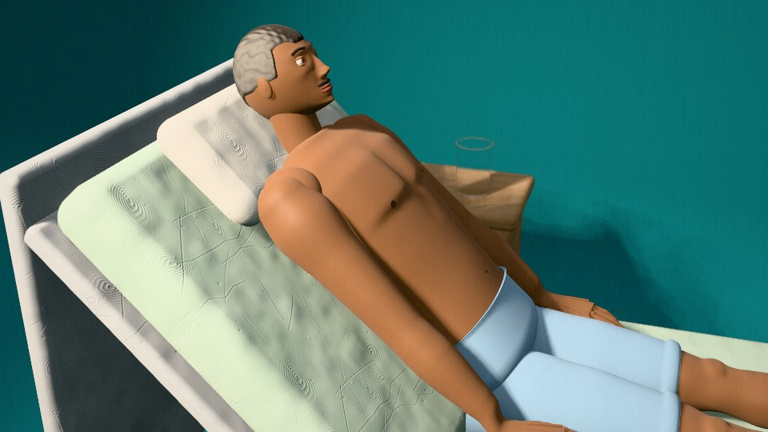
- On screen
- no caption
- What changes
- HOLD 5.0-6.5 s, no caption (the examiner asks him to rest his arms on his tummy).
- Camera
- medium shot of his upper body from his right
- Sound
- Hammer: a soft rubber tap (short dull thud) at bicR 9.20 s, bicL 12.20 s. Very soft sheet rustle when a limb moves. Room ambience under everything.
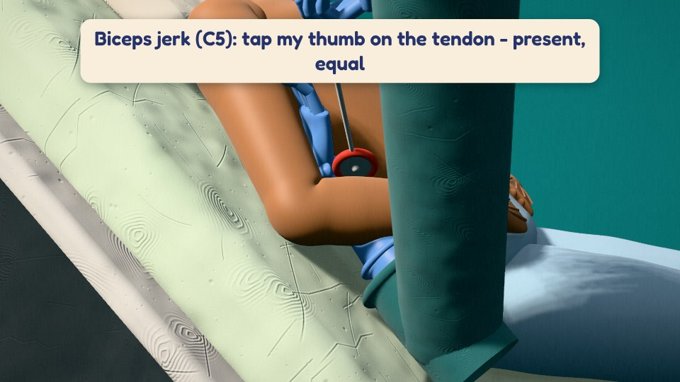
- On screen
Biceps jerk (C5): tap my thumb on the tendon - present, equal
- What changes
- Biceps R: his forearms across his abdomen; the pad of the examiner's left thumb on the right biceps tendon; the hammer lands on the thumbnail.
- Camera
- from his right side, a little above arm level
- Sound
- Hammer: a soft rubber tap (short dull thud) at bicR 9.20 s, bicL 12.20 s. Very soft sheet rustle when a limb moves. Room ambience under everything.

- On screen
Biceps jerk (C5): tap my thumb on the tendon - present, equal
- What changes
- HARD CUT to his left (examiner on his left): the same, mirrored.
- Camera
- from his LEFT side, a little above arm level (mirror; closer, wider lens: the wall is near)
- Sound
- Hammer: a soft rubber tap (short dull thud) at bicR 9.20 s, bicL 12.20 s. Very soft sheet rustle when a limb moves. Room ambience under everything.
3 Supinator jerk (C6) 15-24 s
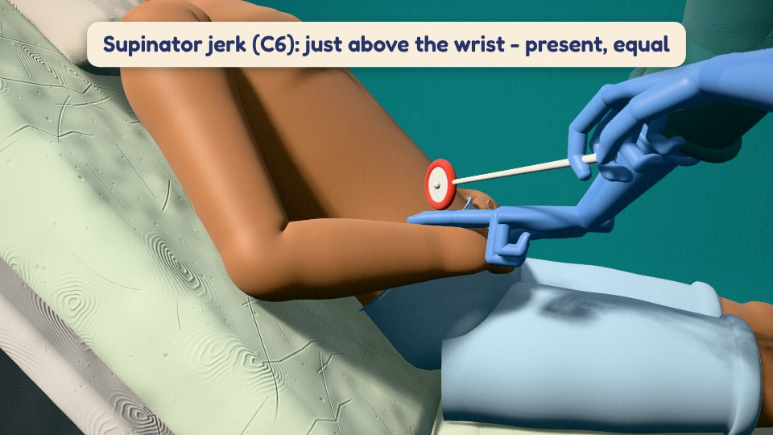
- On screen
Supinator jerk (C6): just above the wrist - present, equal
- What changes
- HARD CUT back to his right. Supinator R: the examiner's left index and middle fingers on the radius 5 cm above the wrist; the hammer lands on them.
- Camera
- from his right side at arm level, a little footward
- Sound
- Hammer: a soft rubber tap (short dull thud) at supR 16.80 s, supL 19.80 s. Very soft sheet rustle when a limb moves. Room ambience under everything.
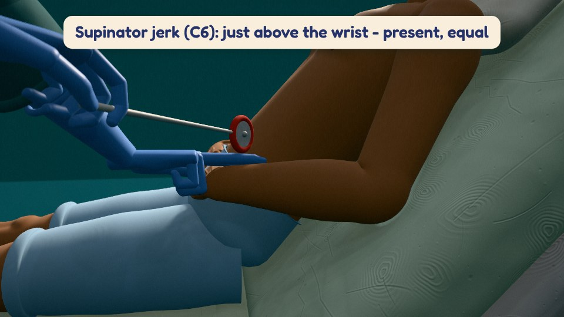
- On screen
Supinator jerk (C6): just above the wrist - present, equal
- What changes
- HARD CUT to his left: the same.
- Camera
- from his LEFT side at arm level (mirror)
- Sound
- Hammer: a soft rubber tap (short dull thud) at supR 16.80 s, supL 19.80 s. Very soft sheet rustle when a limb moves. Room ambience under everything.
4 Triceps jerk (C7) 24-34 s
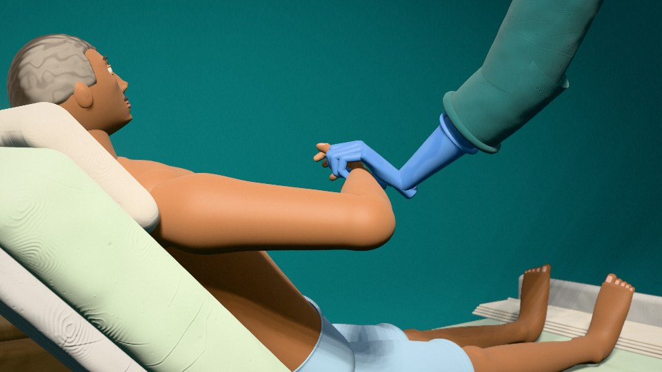
- On screen
- no caption
- What changes
- HARD CUT back to his right: the examiner's left hand holds his right wrist and lays his forearm across his chest, the upper arm resting on the mattress.
- Camera
- from his right side, a little from the head end: elbow, strike, forearm across his trunk
- Sound
- Hammer: a soft rubber tap (short dull thud) at triR 27.60 s, triL 30.80 s. Very soft sheet rustle when a limb moves. Room ambience under everything.
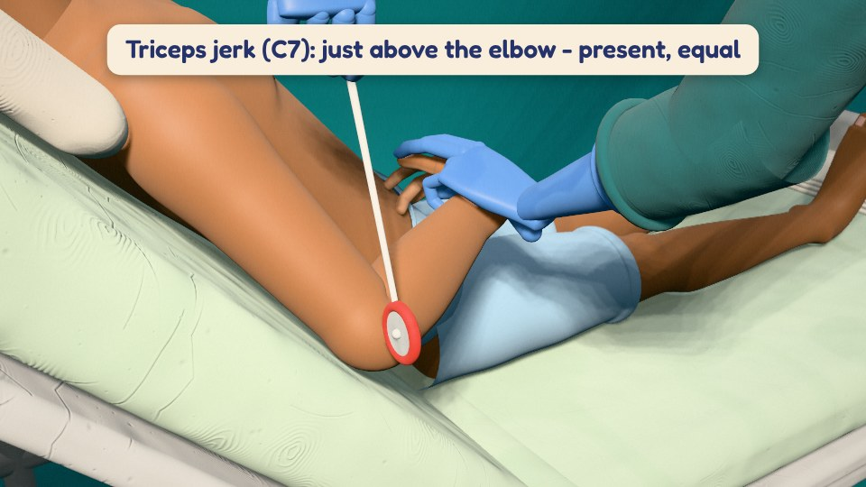
- On screen
Triceps jerk (C7): just above the elbow - present, equal
- What changes
- Triceps R: his upper arm resting on the mattress, elbow 90°, forearm across his chest held at the wrist; the hammer from above and outside onto the triceps tendon 2-3 cm above the olecranon.
- Camera
- from his right side, a little from the head end: elbow, strike, forearm across his trunk
- Sound
- Hammer: a soft rubber tap (short dull thud) at triR 27.60 s, triL 30.80 s. Very soft sheet rustle when a limb moves. Room ambience under everything.
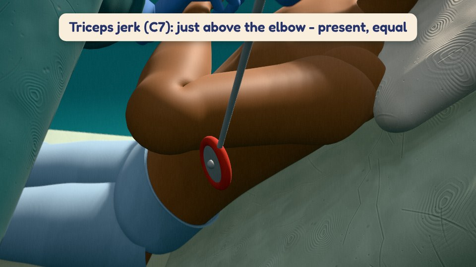
- On screen
Triceps jerk (C7): just above the elbow - present, equal
- What changes
- HARD CUT to his left: the same.
- Camera
- from his LEFT side at arm level (mirror)
- Sound
- Hammer: a soft rubber tap (short dull thud) at triR 27.60 s, triL 30.80 s. Very soft sheet rustle when a limb moves. Room ambience under everything.
5 Reinforcement (arms) 34-41 s
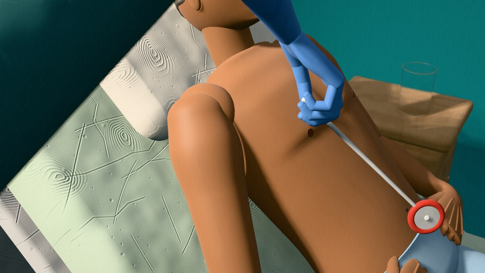
- On screen
- no caption
- What changes
- HOLD 34.0-35.5 s, no caption (asks him to clench his teeth).
- Camera
- from his right side, a little from the head end, tight: his face (jaw), elbow, thumb, hammer
- Sound
- Hammer: a soft rubber tap (short dull thud) at reinfR 37.40 s. Very soft sheet rustle when a limb moves. Room ambience under everything.
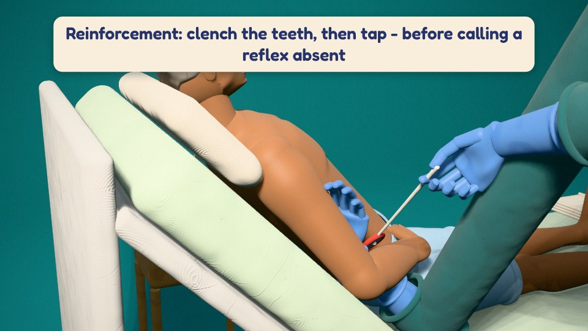
- On screen
Reinforcement: clench the teeth, then tap - before calling a reflex absent
- What changes
- HARD CUT to a 1 s close insert (35.6-36.6 s): his face from his right front, teeth clenched, the masseter bulging; hard cut back for the tap.
- Camera
- close insert of his face from his right front (the clench)
- Sound
- Hammer: a soft rubber tap (short dull thud) at reinfR 37.40 s. Very soft sheet rustle when a limb moves. Room ambience under everything.

- On screen
Reinforcement: clench the teeth, then tap - before calling a reflex absent
- What changes
- Teeth clenched (masseters bulge, jaw in frame); the biceps jerk again on his right: present.
- Camera
- from his right side, a little from the head end, tight: his face (jaw), elbow, thumb, hammer
- Sound
- Hammer: a soft rubber tap (short dull thud) at reinfR 37.40 s. Very soft sheet rustle when a limb moves. Room ambience under everything.
6 Knee jerks (L3, L4) 41-51 s

- On screen
- no caption
- What changes
- HOLD 41.0-42.5 s, no caption.
- Camera
- from his right side, both knees
- Sound
- Hammer: a soft rubber tap (short dull thud) at kneeR 45.80 s, kneeL 47.80 s. Very soft sheet rustle when a limb moves. Room ambience under everything.
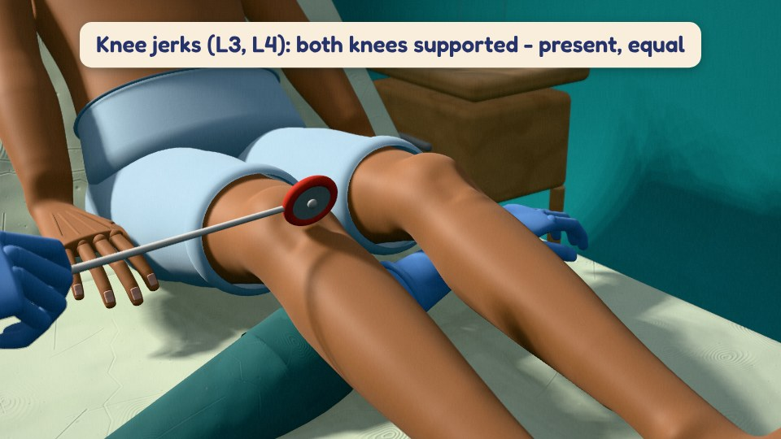
- On screen
Knee jerks (L3, L4): both knees supported - present, equal
- What changes
- The examiner's left forearm under both knees (~30 degrees), heels on the bed; the hammer on the right patellar tendon.
- Camera
- from his right side, both knees
- Sound
- Hammer: a soft rubber tap (short dull thud) at kneeR 45.80 s, kneeL 47.80 s. Very soft sheet rustle when a limb moves. Room ambience under everything.

- On screen
Knee jerks (L3, L4): both knees supported - present, equal
- What changes
- Then the left patellar tendon, from his right side, the hammer over his right shin.
- Camera
- from his right side, both knees
- Sound
- Hammer: a soft rubber tap (short dull thud) at kneeR 45.80 s, kneeL 47.80 s. Very soft sheet rustle when a limb moves. Room ambience under everything.
7 Jendrassik 51-59 s
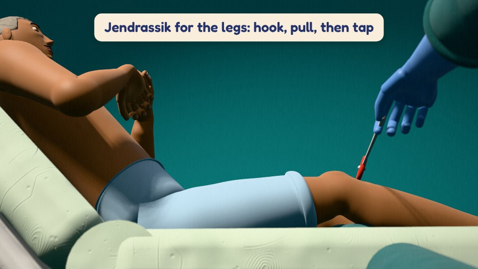
- On screen
- no caption
- What changes
- HOLD 51.0-52.5 s, no caption (hook your fingers together... pull).
- Camera
- wide, from his right side: hooked hands, right knee, hammer
- Sound
- Hammer: a soft rubber tap (short dull thud) at jendR 54.60 s. Very soft sheet rustle when a limb moves. Room ambience under everything.
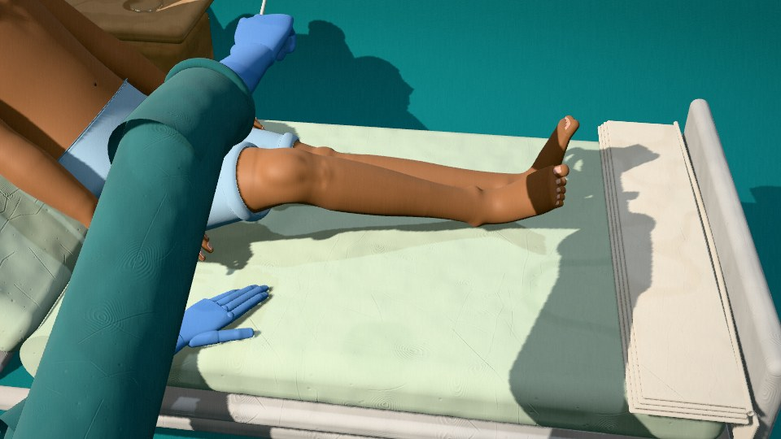
- On screen
Jendrassik for the legs: hook, pull, then tap
- What changes
- Fingers hooked in front of his chest, pulling apart; just after the pull the hammer strikes the right patellar tendon.
- Camera
- wide, from his right side: hooked hands, right knee, hammer
- Sound
- Hammer: a soft rubber tap (short dull thud) at jendR 54.60 s. Very soft sheet rustle when a limb moves. Room ambience under everything.
8 Ankle jerks (S1) 59-69 s
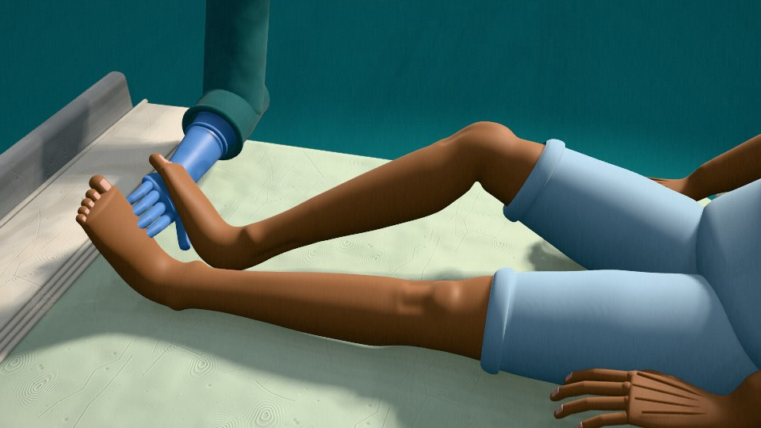
- On screen
- no caption
- What changes
- The examiner's left hand on the sole of his right foot turns the leg out, knee bent, the outer ankle onto the other shin.
- Camera
- wide shot of both legs from his right, above
- Sound
- Hammer: a soft rubber tap (short dull thud) at ankR 61.80 s, ankL 64.80 s. Very soft sheet rustle when a limb moves. Room ambience under everything.

- On screen
Ankle jerks (S1): foot held slightly up - present, equal
- What changes
- Ankle R, from the side of the foot: the left palm on the sole holds the foot slightly up; the hammer on the Achilles tendon just above the heel.
- Camera
- from the side of the foot (his left, toward his head): heel and Achilles tendon in profile
- Sound
- Hammer: a soft rubber tap (short dull thud) at ankR 61.80 s, ankL 64.80 s. Very soft sheet rustle when a limb moves. Room ambience under everything.

- On screen
Ankle jerks (S1): foot held slightly up - present, equal
- What changes
- HARD CUT to his left: the same.
- Camera
- from the side of the foot (his right): the mirror
- Sound
- Hammer: a soft rubber tap (short dull thud) at ankR 61.80 s, ankL 64.80 s. Very soft sheet rustle when a limb moves. Room ambience under everything.
9 Ankle clonus 69-78 s

- On screen
Ankle clonus: sharp push up and hold - no clonus
- What changes
- Ankle clonus R: calf on the examiner's left palm, right palm pushes the foot sharply up and HOLDS it: no beats.
- Camera
- from his right side at foot height
- Sound
- No hammer. Very soft sheet rustle when a limb moves. Room ambience under everything.

- On screen
Ankle clonus: sharp push up and hold - no clonus
- What changes
- HARD CUT to his left: the same.
- Camera
- from his LEFT side (mirror)
- Sound
- No hammer. Very soft sheet rustle when a limb moves. Room ambience under everything.
10 Knee clonus 78-85 s
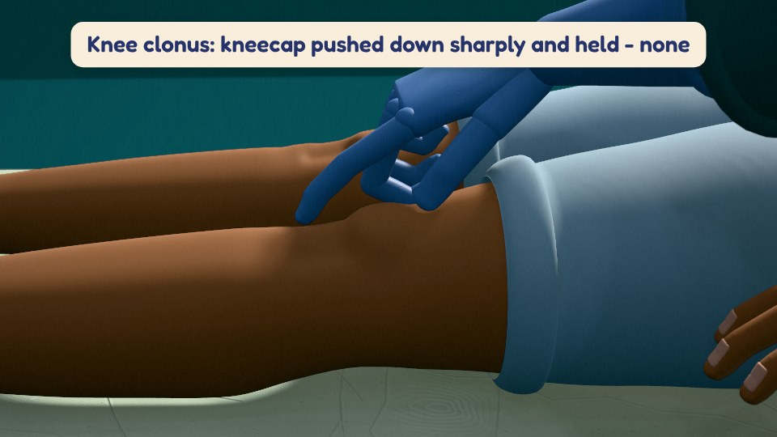
- On screen
Knee clonus: kneecap pushed down sharply and held - none
- What changes
- Knee clonus R: leg straight, thumb and index on the top edge of the kneecap, pushed toward the foot and held: none.
- Camera
- low, from his right side: the knee in profile
- Sound
- No hammer. Very soft sheet rustle when a limb moves. Room ambience under everything.
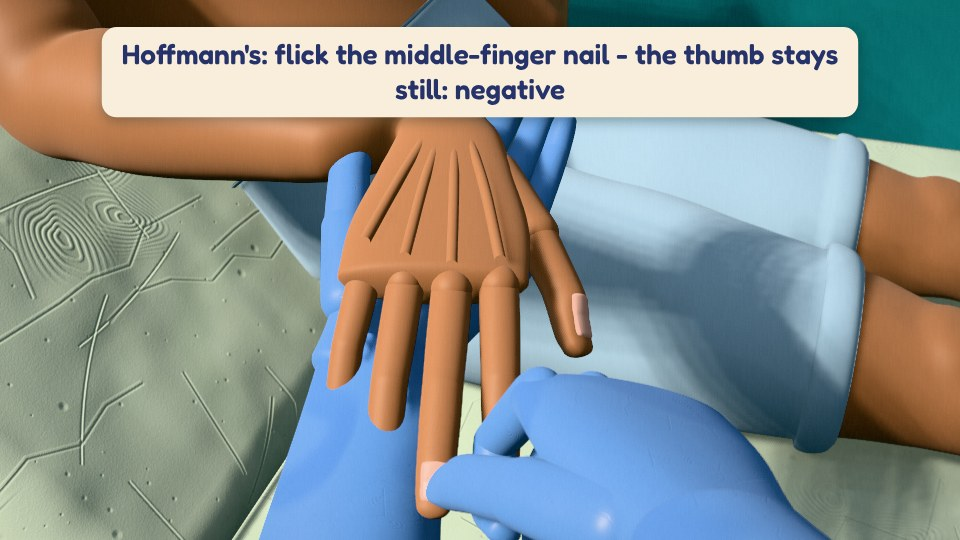
- On screen
Knee clonus: kneecap pushed down sharply and held - none
- What changes
- HARD CUT to his left: the same.
- Camera
- low, from his LEFT side (mirror)
- Sound
- No hammer. Very soft sheet rustle when a limb moves. Room ambience under everything.
11 Hoffmann's sign 85-94 s

- On screen
Hoffmann's: flick the middle-finger nail - the thumb stays still: negative
- What changes
- Hoffmann R: his hand limp, wrist slightly flexed, his wrist on the examiner's left palm; the examiner's right thumb and index hold the tip of his middle finger.
- Camera
- at hand height from his thumb side
- Sound
- No hammer. Very soft sheet rustle when a limb moves. Room ambience under everything.
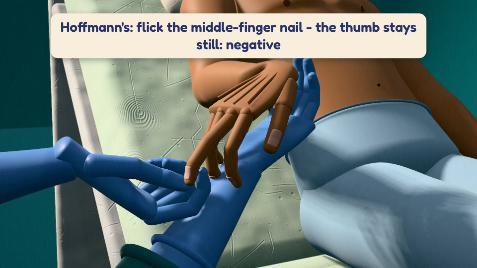
- On screen
Hoffmann's: flick the middle-finger nail - the thumb stays still: negative
- What changes
- The flick of the nail: the fingertip dips and springs back; his thumb and index do not move (negative).
- Camera
- at hand height from his thumb side
- Sound
- No hammer. Very soft sheet rustle when a limb moves. Room ambience under everything.

- On screen
Hoffmann's: flick the middle-finger nail - the thumb stays still: negative
- What changes
- HARD CUT to his left: the same.
- Camera
- from his LEFT side (mirror)
- Sound
- No hammer. Very soft sheet rustle when a limb moves. Room ambience under everything.
12 End 94-97 s
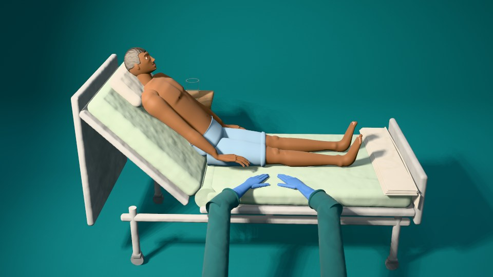
- On screen
- no caption
- What changes
- HARD CUT back to his right; hands back to rest, limbs home, the camera pulls back.
- Camera
- medium shot of his upper body from his right
- Sound
- Soft sheet rustles as his limbs go home; the ambience fades out over the last 0.5 s.

- On screen
- no caption
- What changes
- The CNS home shot, held still 1 s (pixel-identical to the first frame).
- Camera
- CNS home shot (SET.HOME_CNS), still
- Sound
- Soft sheet rustles as his limbs go home; the ambience fades out over the last 0.5 s.
Review panels
Gaps are measured from the meshes: the closest point of each part (the palm and all five digits of every working hand, the hammer head, his heels and ankle) to his skin. Green: touching (0 to 1.5 mm). Amber: 1.5 to 3 mm (close but not touching). Grey: clear of the skin (a part that is not in contact). Red: under the skin. Arrows in the pictures run from the part to the skin.
a. Plan: his right and left
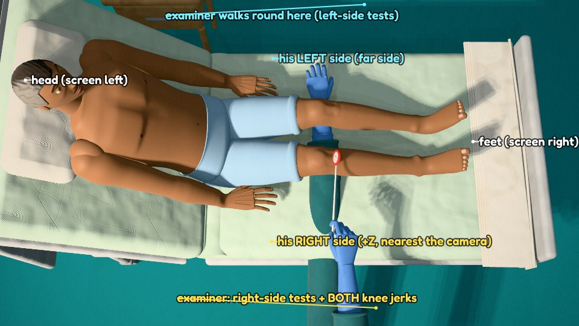
b. The hammer: top of the swing and the strike (gap at the strike)


| hammer head | 0.06 mm |
| ex L palm | 0.06 mm |
| ex L thumb | 0.09 mm |
| ex L index | 1.08 mm |
| ex L middle | 0.33 mm |
| ex L ring | 1.00 mm |
| ex L little | 0.11 mm |
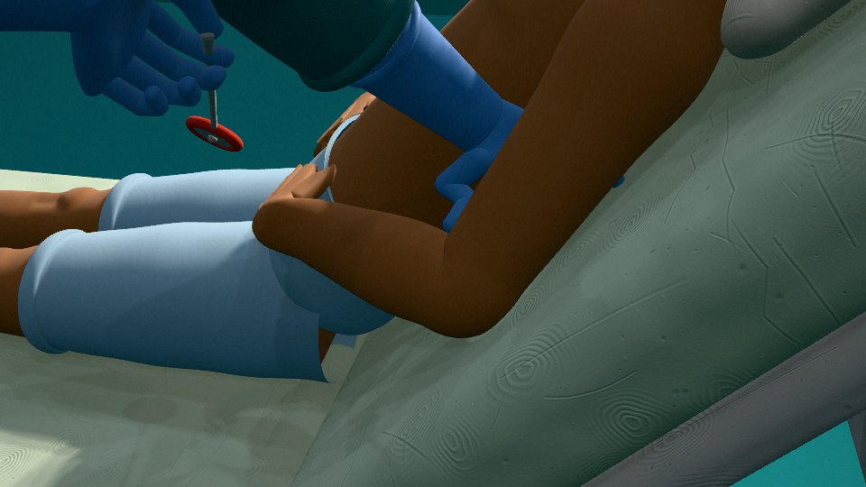
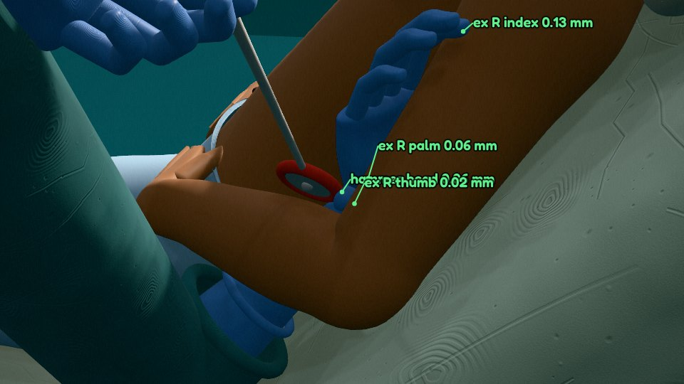
| hammer head | 0.06 mm |
| ex R palm | 0.06 mm |
| ex R thumb | 0.09 mm |
| ex R index | 1.08 mm |
| ex R middle | 0.33 mm |
| ex R ring | 1.00 mm |
| ex R little | 0.11 mm |


| hammer head | 0.06 mm |
| ex L index (whole finger) | 0.77 mm |
| ex L index tip | 0.77 mm |
| ex L middle (whole finger) | 0.62 mm |
| ex L middle tip | 0.62 mm |
| ex L thumb | 0.03 mm |
| ex L palm | > 15 mm |


| hammer head | 0.06 mm |
| ex R index (whole finger) | 0.77 mm |
| ex R index tip | 0.77 mm |
| ex R middle (whole finger) | 0.62 mm |
| ex R middle tip | 0.62 mm |
| ex R thumb | 0.03 mm |
| ex R palm | > 15 mm |
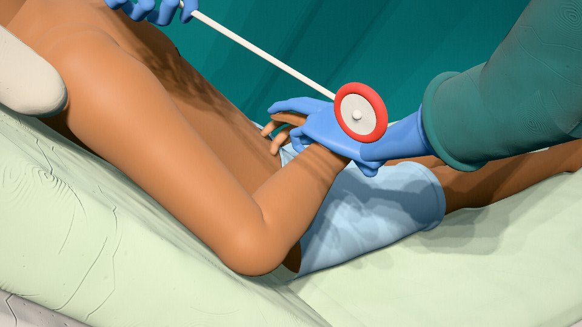
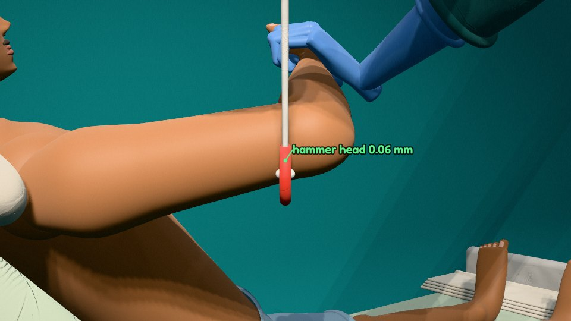
| hammer head | 0.06 mm |
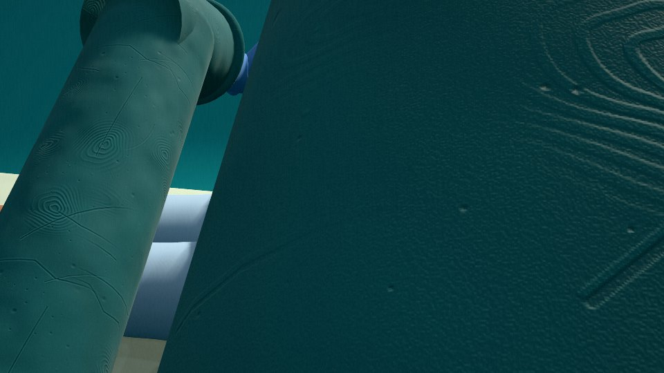
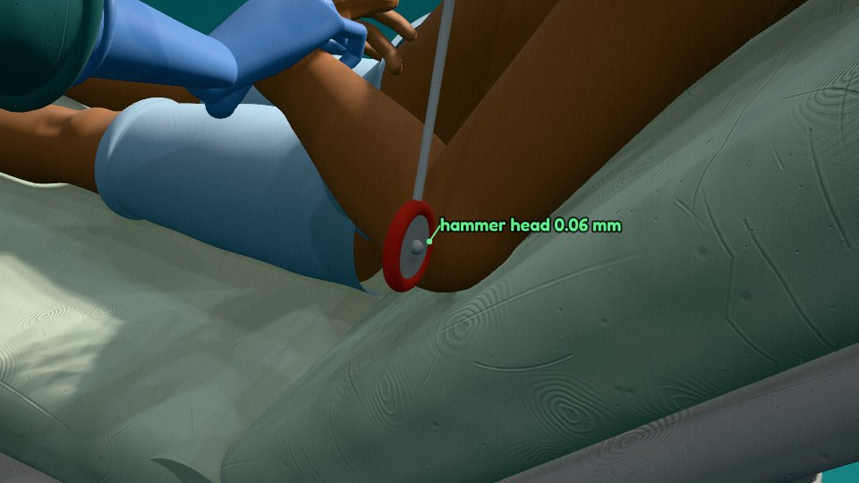
| hammer head | 0.06 mm |
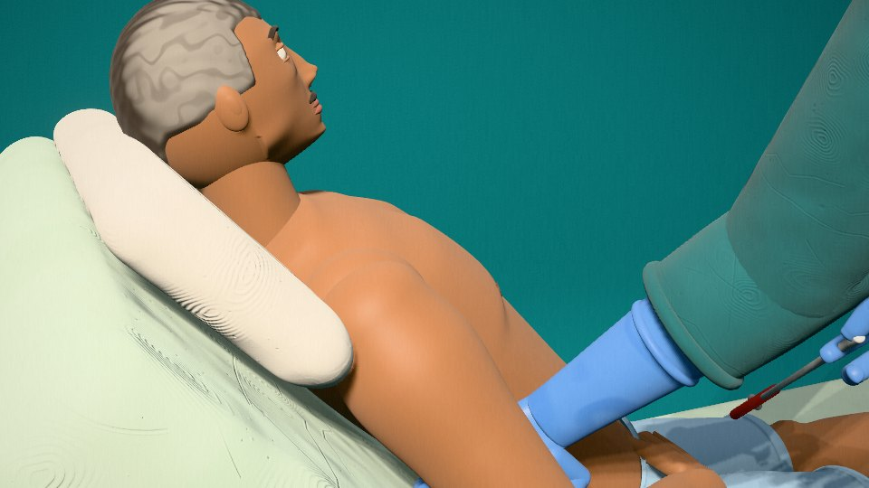

| hammer head | 0.06 mm |
| ex L palm | 0.06 mm |
| ex L thumb | 0.09 mm |
| ex L index | 1.08 mm |
| ex L middle | 0.33 mm |
| ex L ring | 1.00 mm |
| ex L little | 0.11 mm |

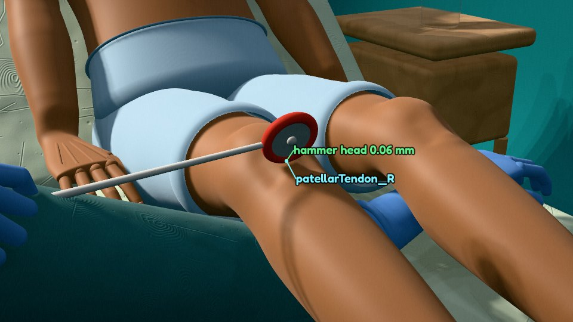
| hammer head | 0.06 mm |
| heel R on the mattress | 9.42 mm |
| heel L on the mattress | 9.34 mm |
| hammer contact to patellarTendon_R (cm) | 0.08 |
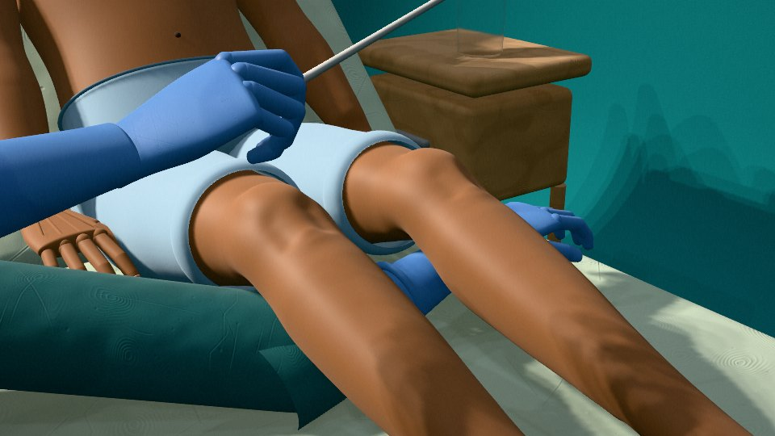

| hammer head | 0.06 mm |
| heel R on the mattress | 9.42 mm |
| heel L on the mattress | 9.34 mm |
| hammer contact to patellarTendon_L (cm) | 0.08 |

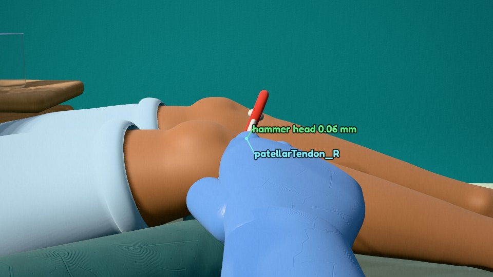
| hammer head | 0.06 mm |
| heel R on the mattress | 9.42 mm |
| heel L on the mattress | 9.34 mm |
| hammer contact to patellarTendon_R (cm) | 0.08 |
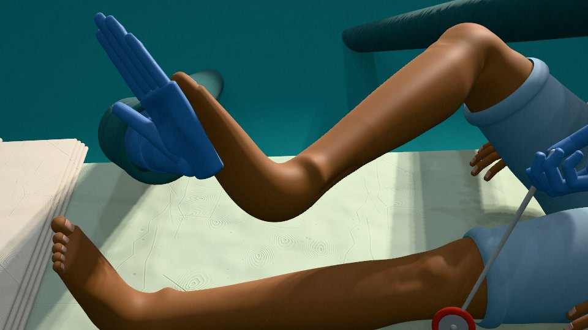

| hammer head | 0.06 mm |
| ex L palm | 0.03 mm |
| ex L thumb | 1.35 mm |
| ex L index | > 15 mm |
| ex L middle | > 15 mm |
| ex L ring | > 15 mm |
| ex L little | > 15 mm |
| his outer ankle on the other shin | 0.06 mm |
| hammer contact to achillesStrike_R (cm) | 0.08 |


| hammer head | 0.06 mm |
| ex R palm | 0.03 mm |
| ex R thumb | 1.35 mm |
| ex R index | > 15 mm |
| ex R middle | > 15 mm |
| ex R ring | > 15 mm |
| ex R little | > 15 mm |
| his outer ankle on the other shin | 0.06 mm |
| hammer contact to achillesStrike_L (cm) | 0.08 |
c. The reflex movement: joint angle before and at its peak
| Reflex | Joint | Before | Peak | Change |
|---|---|---|---|---|
| bicR | elbow | 105.8° | 95.8° | -10.0° |
| bicL | elbow | 105.8° | 95.8° | -10.0° |
| supR | elbow | 105.8° | 97.8° | -8.0° |
| supL | elbow | 105.8° | 97.8° | -8.0° |
| triR | elbow | 90.1° | 100.1° | +10.0° |
| triL | elbow | 90.1° | 100.1° | +10.0° |
| kneeR | knee | 30° | 18° | -12.0° |
| kneeL | knee | 30° | 18° | -12.0° |
| ankR | ankle | 8° | -2° | -10.0° |
| ankL | ankle | 8° | -2° | -10.0° |
Elbow: the angle between upper arm and forearm (smaller = flexed). Knee: flexion (smaller = extended). Ankle: + = dorsiflexion. Targets: biceps flexes ~10°, supinator ~8°, triceps extends ~10°, knee kicks ~12°, ankle plantar-flexes ~10°; right and left the same.
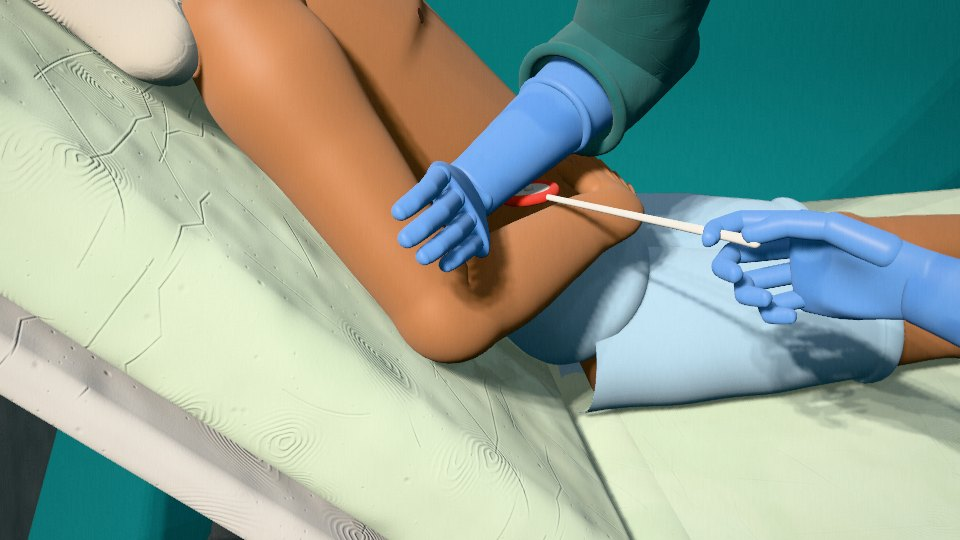
| elbow | 95.8° |

| elbow | 95.8° |

| elbow | 97.8° |

| elbow | 97.8° |
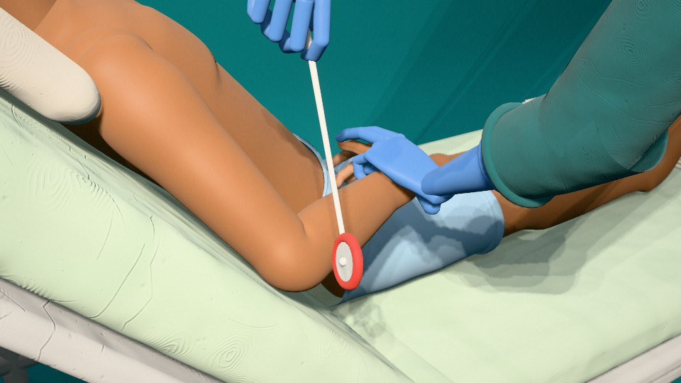
| elbow | 100.1° |

| elbow | 100.1° |
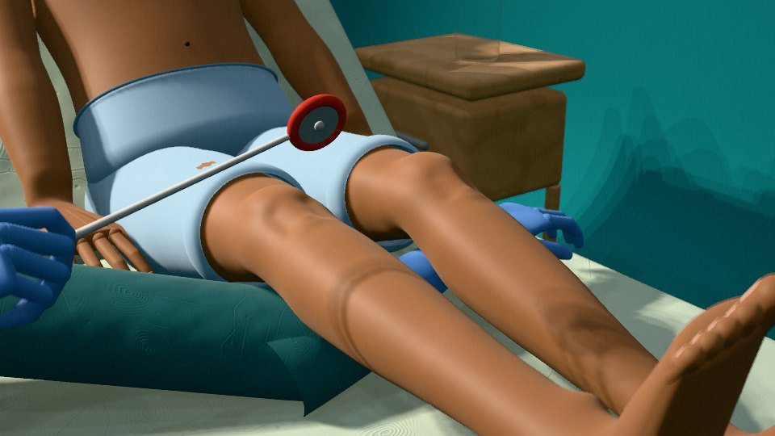
| knee | 18° |

| knee | 18° |
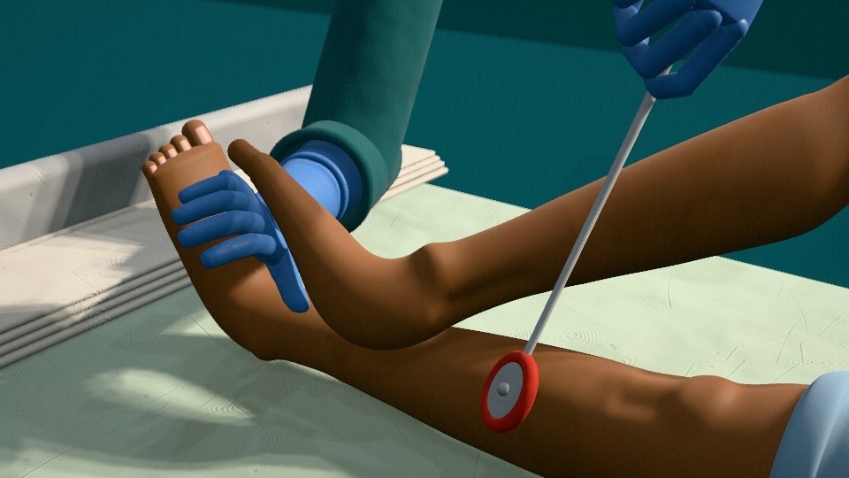
| ankle | -2° |

| ankle | -2° |
d. Jendrassik: hooked hands, and the clenched jaw
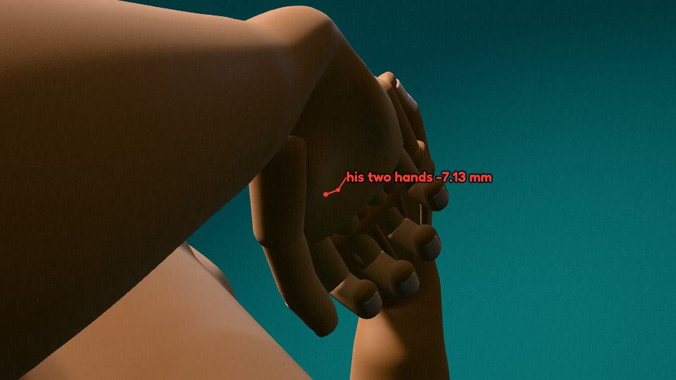
| his right palm on his left hand | 0.05 mm |
| his right thumb on his left hand | > 15 mm |
| his right index on his left hand | > 15 mm |
| his right middle on his left hand | > 15 mm |
| his right ring on his left hand | > 15 mm |
| his right little on his left hand | > 15 mm |
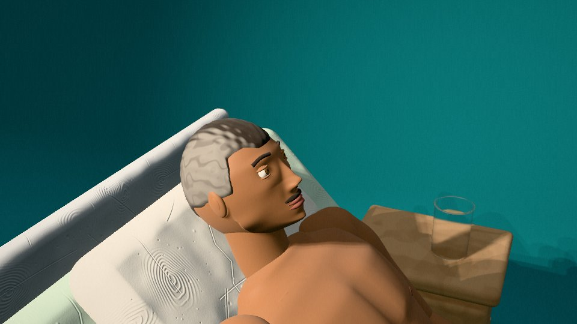
| his face, chin to brow (px at 960x540) | 210 |
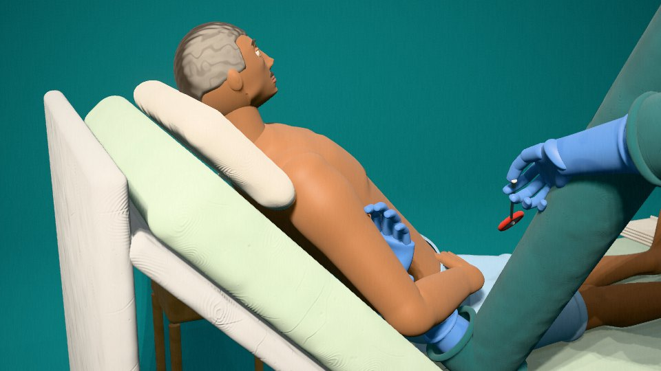
| his face, chin to brow (px at 960x540) | 335 |
e. The knee support

| forearm-right knee | 0.06 mm |
| forearm-left knee | 0.52 mm |
| ex L palm | > 15 mm |
| ex L thumb | > 15 mm |
| ex L index | > 15 mm |
| ex L middle | > 15 mm |
| ex L ring | > 15 mm |
| ex L little | > 15 mm |
| heel R on the mattress | 9.42 mm |
| heel L on the mattress | 9.34 mm |
f. Clonus: palm on the ball of the foot; thumb and index on the kneecap
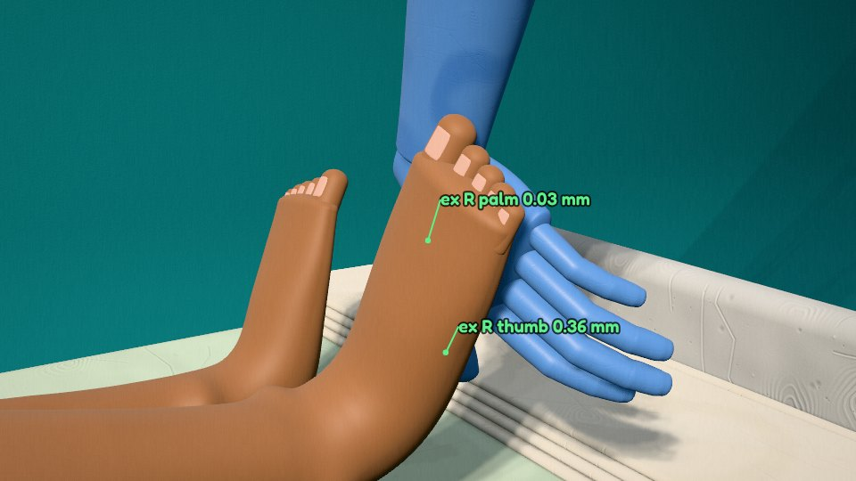
| ex R palm | 0.03 mm |
| ex R thumb | 0.36 mm |
| ex R index | > 15 mm |
| ex R middle | > 15 mm |
| ex R ring | > 15 mm |
| ex R little | > 15 mm |
| ex L palm | -0.10 mm |
| ex L thumb | 6.24 mm |
| ex L index | > 15 mm |
| ex L middle | > 15 mm |
| ex L ring | > 15 mm |
| ex L little | 2.85 mm |

| ex L palm | > 15 mm |
| ex L thumb | 1.69 mm |
| ex L index | 2.63 mm |
| ex L middle | > 15 mm |
| ex L ring | > 15 mm |
| ex L little | > 15 mm |
g. Hoffmann's sign: before and after the flick

| ex L (support) palm | 0.03 mm |
| ex L (support) thumb | > 15 mm |
| ex L (support) index | 1.87 mm |
| ex L (support) middle | > 15 mm |
| ex L (support) ring | > 15 mm |
| ex L (support) little | 13.68 mm |
| ex R (pinch) palm | > 15 mm |
| ex R (pinch) thumb | 0.12 mm |
| ex R (pinch) index | 0.06 mm |
| ex R (pinch) middle | 6.97 mm |
| ex R (pinch) ring | > 15 mm |
| ex R (pinch) little | > 15 mm |
| his thumb tip | 0.157, 8.3, 3.834 |
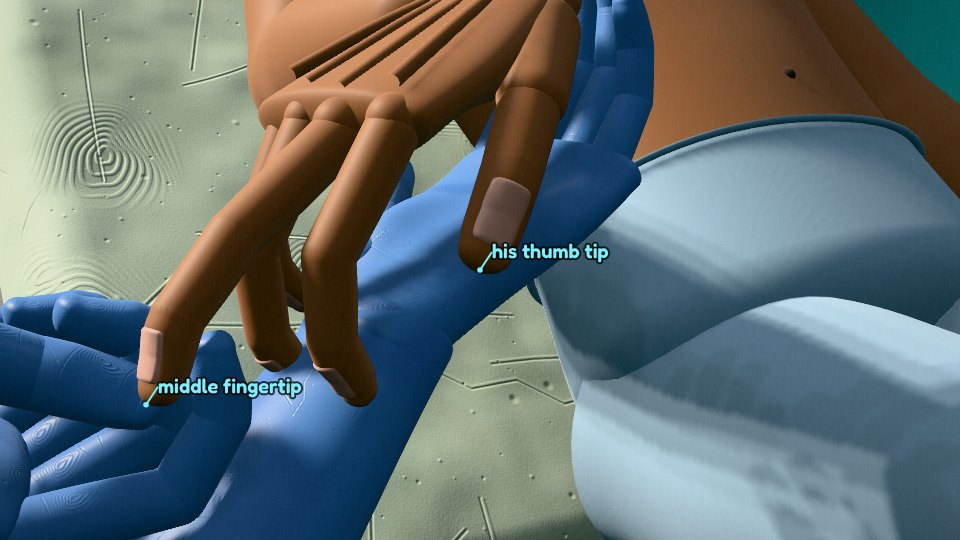
| his thumb tip | 0.157, 8.3, 3.834 |
| middle fingertip | -0.133, 7.957, 4.749 |
Skin-level contact panels (every other contact)
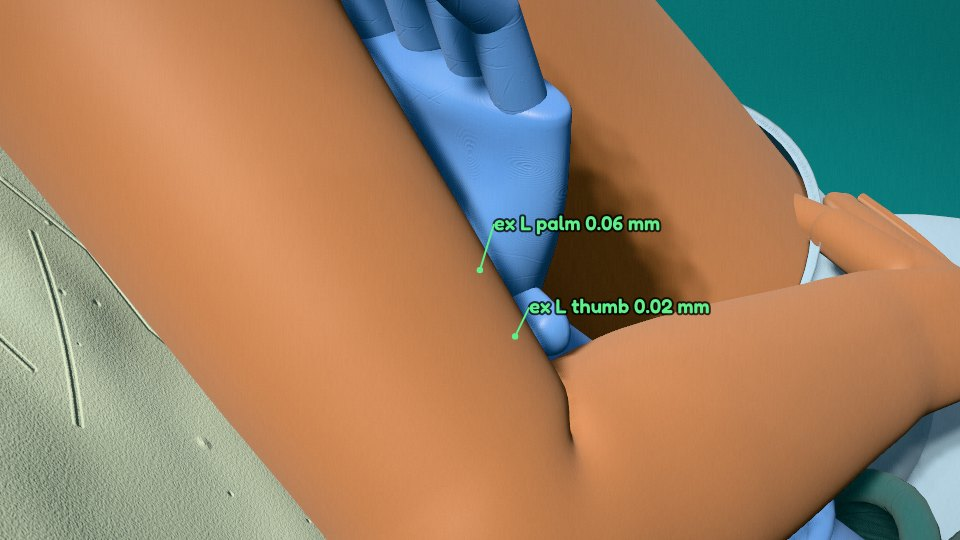
| ex L palm | 0.06 mm |
| ex L thumb | 0.09 mm |
| ex L index | 1.08 mm |
| ex L middle | 0.33 mm |
| ex L ring | 1.00 mm |
| ex L little | 0.11 mm |
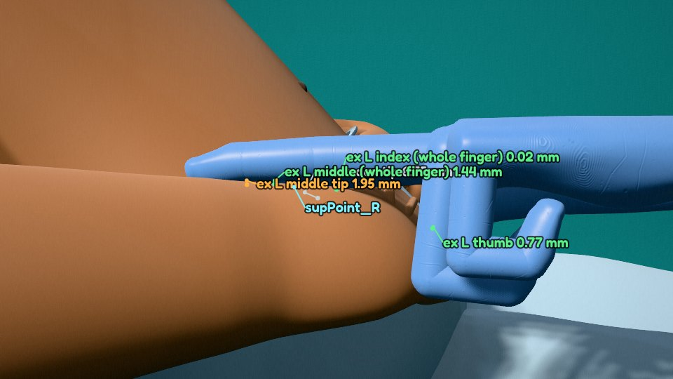
| ex L index (whole finger) | 0.77 mm |
| ex L index tip | 0.77 mm |
| ex L middle (whole finger) | 0.62 mm |
| ex L middle tip | 0.62 mm |
| ex L thumb | 0.03 mm |
| ex L palm | > 15 mm |
| supPoint_R to the wrist joint (cm) | 4.91 |
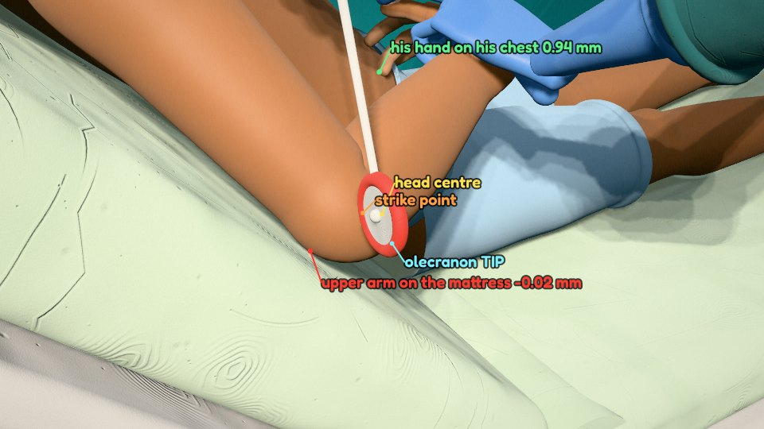
| his upper arm on the mattress | -0.02 mm |
| his hand on his chest | 0.94 mm |
| hammer head centre to the olecranon tip, along the upper arm toward the shoulder (cm) | 3.22 |
| strike point (head on the skin) to the olecranon tip, along the upper arm (cm) | 3.87 |
| elbow | 90.1° |
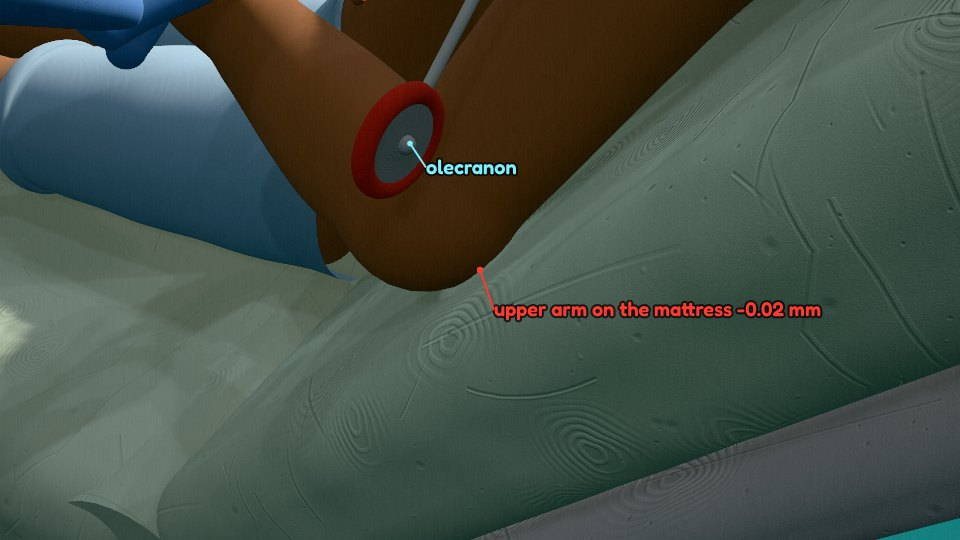
| his upper arm on the mattress | -0.02 mm |
| his hand on his chest | -0.34 mm |
| hammer head centre to the olecranon tip, along the upper arm toward the shoulder (cm) | 3.22 |
| strike point (head on the skin) to the olecranon tip, along the upper arm (cm) | 3.87 |
| elbow | 90.1° |
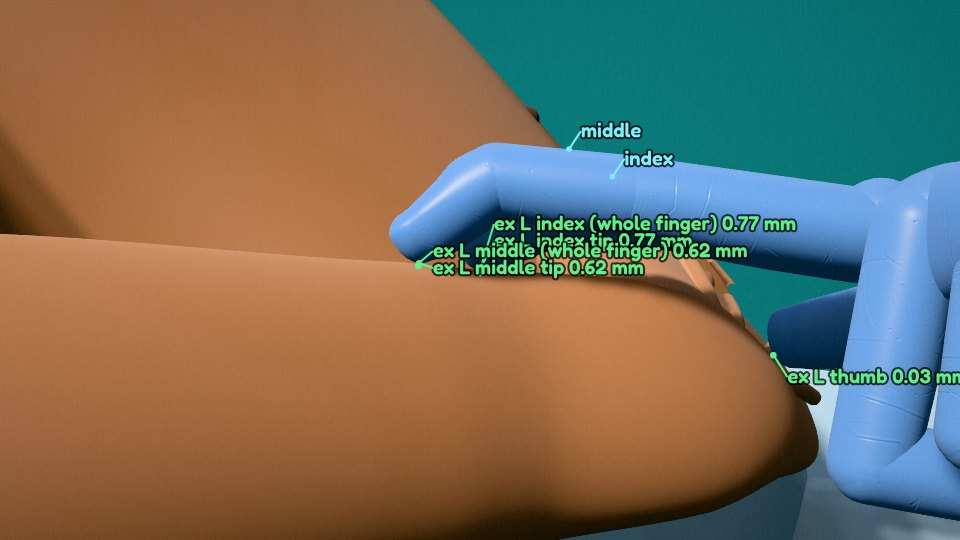
| ex L index (whole finger) | 0.77 mm |
| ex L index tip | 0.77 mm |
| ex L middle (whole finger) | 0.62 mm |
| ex L middle tip | 0.62 mm |
| ex L thumb | 0.03 mm |
| ex L palm | > 15 mm |
| index | -1.879, 8.886, 1.827 |
| middle | -1.979, 8.961, 2.036 |
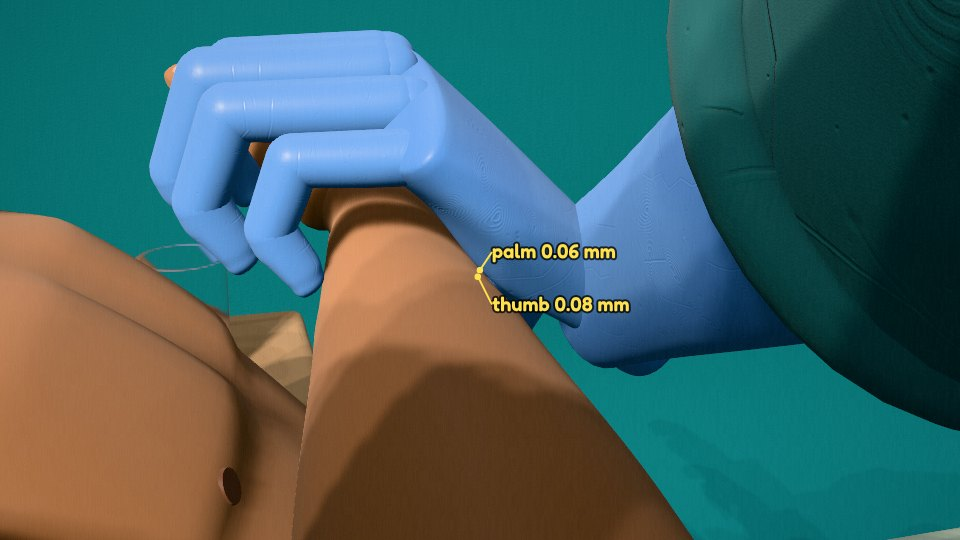
| ex L palm | 0.03 mm |
| ex L thumb | 0.06 mm |
| ex L index | 0.76 mm |
| ex L middle | 0.73 mm |
| ex L ring | 0.57 mm |
| ex L little | 0.79 mm |

| ex L palm | 0.03 mm |
| ex L thumb | 1.35 mm |
| ex L index | > 15 mm |
| ex L middle | > 15 mm |
| ex L ring | > 15 mm |
| ex L little | > 15 mm |
| his outer ankle on the other shin | 0.06 mm |

| ex R (support) palm | 0.03 mm |
| ex R (support) thumb | > 15 mm |
| ex R (support) index | 1.87 mm |
| ex R (support) middle | > 15 mm |
| ex R (support) ring | > 15 mm |
| ex R (support) little | 13.68 mm |
| ex L (pinch) palm | > 15 mm |
| ex L (pinch) thumb | 0.12 mm |
| ex L (pinch) index | 0.06 mm |
| ex L (pinch) middle | 6.97 mm |
| ex L (pinch) ring | > 15 mm |
| ex L (pinch) little | > 15 mm |
Facts and numbers I assumed
- Every left-side test is the exact mirror of the right one (positions reflected through the bed's midline), so right and left are the same size. That means the examiner's hands swap roles on his left: the hammer is in the examiner's LEFT hand there (it changes hands as he walks round, off camera). The knee jerks are both done from his right, as asked.
- The kit's bicepsTendon and tricepsTendon vertices follow the palm's roll into the elbow. With his forearm pronated across his abdomen they are not on the front or back of the elbow (measured 81° and 24° off). These two tendon points are measured on the posed mesh instead: the skin vertex just above the elbow that faces the inside (biceps) or the outside (triceps) of the bend. Every other landmark is NEURO.points / P.legPoint.
- Arms across the tummy: the kit acrossAbdomen preset, fine-tuned: elbows resting on the mattress 30 cm out from his midline, hands palm down on his lower abdomen, elbows about 106°. For the biceps jerk the examiner's left hand rests on the front of his upper arm just above the elbow, its thumb pad on the tendon and the fingers together curled round the outside of the elbow onto the skin; the examiner's forearm rises from it toward him.
- Triceps: his arm is built like the arms-across preset but further out and higher: the upper arm resting on the mattress (abducted about 35°), the elbow at 90°, the forearm across his abdomen, the hand palm down toward his other side. The strike point is on the back of the arm 2-3 cm above the olecranon, where it faces out to his side and up.
- Supinator: the examiner's left index and middle fingers lie side by side along the radial border of his forearm, 5 cm above the wrist joint (measured along the forearm), slightly curled so both tips rest on the skin (the line of the two fingers sits a little round toward the back of the forearm, where it is flatter), ring and little curled, the thumb alongside; the hammer lands on the back of the two fingers.
- Triceps strike: the olecranon TIP is the skin of the elbow furthest along the upper arm past the joint; the strike point is chosen so that the hammer HEAD's centre lands 2.5-3.5 cm from that tip toward the shoulder (the head is 5.4 cm across, so its rim touches the skin about 3 cm out from its centre).
- Ankle jerk: the strike point is on the Achilles tendon about 2 cm above the level of the ankle bones, on its inner edge (the turned-out leg lifts that edge clear of the other shin, so the hammer head has room; straight behind, the head would sink into the other shin). The kit's achillesTendon point is about 5 cm up, where it reads as the lower calf. The examiner's left palm holds the sole up (foot 8° dorsiflexed).
- Sleeves: in the arm shots the examiner's upper arms rise toward his shoulders (he leans over the bed) so his sleeves leave the frame at the top, out of the side cameras.
- The patient does not speak in this part (he follows the instructions silently), so no visemes are used. The speech holds are still frames with no caption.
- The hammer is picked up off camera during the push-in; the examiner's right hand brings it into frame at 7.6 s, just after the first hold, so the still hold picture is not crossed by his sleeve.
- The hammer is put aside off camera after the ankle jerks: clonus and Hoffmann's need both hands. It is back in no shot after that.
- Breathing: P.breathe at 14 breaths a minute (its 4.6 s period sped up by 7%), off in the first and last second.
- Ankle clonus: the push dorsiflexes the foot by 18° in 0.13 s and holds it for about 2 s. Knee clonus: the kneecap (the skin over it) moves 8 mm toward the foot and is held for 2 s.
- Reflex timing: the muscle firms from 0.05 s after the strike for 0.15 s (a bulge of up to 3 mm, blended); the joint moves to its peak in 0.08 s and back in 0.22 s.
- Knee clonus grip: the examiner's left hand comes from above his thigh, back of the hand up; the index finger bent so its tip, and the thumb tip beside it (15 mm apart, side by side, not a V), rest on the top edge of the kneecap; the other three fingers tucked into the palm.
- Hoffmann's: his forearm held out at his right, hand palm down and limp, the wrist flexed about 28°, the fingers loosely curled; the examiner's left palm under his wrist (fingers together); the examiner's right index pad under the tip of his middle finger and the right thumb pad on its nail, which it flicks. The clay fingertip is about 2.4 cm thick, so the pinch is that wide.
- Every contact number is measured on the posed meshes (every vertex of the named part against the skin it touches), in the solve (solved.json, checks/solve-log.txt) and again on the rendered frame (the review panels).
Known open points
- The close shots are fixed camera directions tested frame by frame. Left-side shots mirror the right ones; where the wall is close on his left the camera comes in closer with a wider lens for the same view.
- Knee clonus, during the push: the kneecap skin and the hand both move 8 mm toward the foot, but not exactly together, so the thumb tip is 1.7 mm and the index tip 2.6 mm off the skin at 79.8 s (they rest on it before the push). I will lock the hand to the moving skin in the build.
- In-between travel of the hands (between holds) is still the straight blend between the solved holds; I will check it in the transitions scan after you approve the poses.
Solve log (every measurement, from the solve that made solved.json)
abd R elbow 105.8 deg; kit bicepsTendon -4.034, 8.232, 2.716 its normal is 84 deg from the inside of the bend; brachioradialisTendon normal 0.027, 0.972, -0.234
abd L elbow 105.8 deg; kit bicepsTendon -4.034, 8.232, -2.716 its normal is 84 deg from the inside of the bend; brachioradialisTendon normal 0.031, 0.971, 0.235
biceps tendon R measured -3.793, 8.874, 2.594 normal 0.804, 0.17, -0.57 facing the inside of the bend 0.997
biceps tendon L measured -3.793, 8.874, -2.594 normal 0.804, 0.171, 0.57 facing the inside of the bend 0.997
biceps hand turn -1.6 across 0 thumb pad 0.09 lowest -5.01 mm, wrist to the forearm line 16 deg
biceps hand turn -1.6 across -0.3 thumb pad 0.09 lowest 0.07 mm, wrist to the forearm line 21 deg
biceps hand turn -1.6 across 0.3 thumb pad 0.09 lowest -14.93 mm, wrist to the forearm line 61 deg
biceps hand turn -0.8 across 0 thumb pad 0.09 lowest -14.99 mm, wrist to the forearm line 49 deg
biceps hand turn -0.8 across -0.3 thumb pad 0.09 lowest -14.98 mm, wrist to the forearm line 48 deg
biceps hand turn -0.8 across 0.3 thumb pad 0.09 lowest -14.99 mm, wrist to the forearm line 68 deg
biceps hand turn 0.8 across 0 thumb pad 0.09 lowest 0.04 mm, wrist to the forearm line 136 deg
biceps hand turn 0.8 across -0.3 thumb pad 0.09 lowest -5.84 mm, wrist to the forearm line 128 deg
biceps hand turn 0.8 across 0.3 thumb pad 0.09 lowest 0.11 mm, wrist to the forearm line 119 deg
biceps hand turn 1.6 across 0 thumb pad 0.09 lowest -6.24 mm, wrist to the forearm line 164 deg
biceps hand turn 1.6 across -0.3 thumb pad 0.09 lowest -14.73 mm, wrist to the forearm line 150 deg
biceps hand turn 1.6 across 0.3 thumb pad 0.09 lowest 0.06 mm, wrist to the forearm line 121 deg
biceps hand turn -1.6 across 0 thumb pad 0.09 lowest -5.01 mm, wrist to the forearm line 37 deg
biceps hand turn -1.6 across -0.3 thumb pad 0.09 lowest 0.07 mm, wrist to the forearm line 40 deg
biceps hand turn -1.6 across 0.3 thumb pad 0.09 lowest -14.93 mm, wrist to the forearm line 66 deg
biceps hand turn -0.8 across 0 thumb pad 0.09 lowest -14.99 mm, wrist to the forearm line 82 deg
biceps hand turn -0.8 across -0.3 thumb pad 0.09 lowest -14.98 mm, wrist to the forearm line 82 deg
biceps hand turn -0.8 across 0.3 thumb pad 0.09 lowest -14.99 mm, wrist to the forearm line 95 deg
biceps hand turn 0.8 across 0 thumb pad 0.09 lowest 0.04 mm, wrist to the forearm line 168 deg
biceps hand turn 0.8 across -0.3 thumb pad 0.09 lowest -5.84 mm, wrist to the forearm line 153 deg
biceps hand turn 0.8 across 0.3 thumb pad 0.09 lowest 0.11 mm, wrist to the forearm line 141 deg
biceps hand turn 1.6 across 0 thumb pad 0.09 lowest -6.24 mm, wrist to the forearm line 139 deg
biceps hand turn 1.6 across -0.3 thumb pad 0.09 lowest -14.73 mm, wrist to the forearm line 133 deg
biceps hand turn 1.6 across 0.3 thumb pad 0.09 lowest 0.06 mm, wrist to the forearm line 114 deg
biceps hand above the mattress (mm): {"palm":126.35,"thumb":131.47,"index":82.79,"middle":69.86,"ring":64.95,"little":69.63}
biceps hand on the front of the arm: 2.7 cm above the tendon, reach 0.60 | thumb pad 0.09 mm, lowest thumb point 0.09 mm, deepest point in the arm capsules -1.6 mm
biceps thumb gaps (mm) {"thumbPad":0.09,"palm":0.06,"index":1.08,"middle":0.33,"ring":1,"little":0.11,"min":0.06} parts {"palm":0.06,"index":1.08,"indexTip":1.08,"middle":0.33,"middleTip":0.33,"ring":1,"ringTip":1,"little":0.11,"littleTip":0.11,"thumb":0.09,"thumbTip":0.09}
biceps strike: swing plane turned 90 deg; raised hammer to his skin / the mattress -3.74 mm, gap at the strike 0.06 mm
supinator fingers: round the forearm 0.5 turn 150 roll 0.25 index 0.77 middle 0.62 mm; lowest of the hand vs his arm + trunk 0.03 mm; point 4.91 cm above the wrist
supinator strike: swing plane turned 0 deg; raised hammer to his skin / the mattress 3 mm, gap at the strike 0.06 mm
supinator gaps {"index":0.77,"middle":0.62,"indexTip":0.77,"middleTip":0.62,"thumb":0.03,"ring":null,"little":null,"fingersApart":24.41,"lowest":0.03,"aboveWrist":4.91,"strikeGap":0.06} hammer on the index finger
triceps arm: elbow out 3.3 wrist height 1.153 elbow 90.1 deg, abduction 28.4 deg
triceps arm: elbow out 3.55 wrist height 1.128 elbow 90.1 deg, abduction 34.1 deg
triceps arm: elbow out 3.8 wrist height 1.006 elbow 92.4 deg, abduction 40.2 deg
triceps arm: elbow out 4.05 wrist height 1.006 elbow 92.3 deg, abduction 44.2 deg
triceps arm {"upperArmOnMattress":-0.02,"handOnChest":0.05,"elbow":90.1,"abduction":34}
triceps tendon measured -4.044, 8.715, 3.956 normal 0.029, 0.273, 0.962 ; kit tricepsTendon is 18 deg away; elbow 90.1 deg
wrist hold thumb pad 0.08 mm, lowest thumb point 0.06 mm
wrist hold gaps (mm) {"palm":0.03,"index":0.76,"indexTip":0.76,"middle":0.73,"middleTip":0.73,"ring":0.57,"ringTip":0.57,"little":0.79,"littleTip":0.79,"thumb":0.06,"thumbTip":0.06}
triceps strike: swing plane turned 0 deg; raised hammer to his skin / the mattress 3 mm, gap at the strike 0.06 mm
triceps: head centre 1.9 cm proximal to the olecranon tip (strike point 2.98 cm)
triceps strike: swing plane turned 0 deg; raised hammer to his skin / the mattress 3 mm, gap at the strike 0.06 mm
triceps: head centre 3.22 cm proximal to the olecranon tip (strike point 3.87 cm)
triceps strike gap 0.06 mm
knee support: forearm to right knee 0.06 mm, to left knee 0.52 mm; heels above the mattress R 16.11 L 16.11 mm
strike kneeR gap 0.06 mm
strike kneeL gap 0.06 mm
pickCam knees clear view at 50 deg from the preferred direction
Jendrassik pull 0 right hand moved 77.62 mm toward his right, along the back of the hand -20 mm; closest point between the hands 0.94 mm
Jendrassik pull 1 right hand moved 61.64 mm toward his right, along the back of the hand -20 mm; closest point between the hands 0.95 mm
Jendrassik pull 0 : closest point between his two hands 0.05 mm (negative = fingers through each other)
Jendrassik pull 1 : closest point between his two hands 0.05 mm (negative = fingers through each other)
pickCam: no fully clear view for Jendrassik - best sees 2 of 3 at 0 deg
ankle jerk leg {"hipFlex":33.7,"hipAbd":11.5,"hipRot":43.6,"knee":73.4,"ankle":8,"ankleInv":0,"bigToe":0,"toes":0,"fan":0,"error":0} | outer ankle on the other shin 0.06 mm (the inner thighs near the groin, inside the trousers: -5.45 mm)
palm across the ball of the foot R (L hand): palm 0.03 mm, lowest point of the hand 0.03 mm
ankle strike: Achilles point 1.7 cm above the ankle bones (kit point 4.89 cm), gap 0.06 mm; swing plane turned 30 deg; face turned 45 deg round the leg from straight behind; hammer to the other leg 14.74 mm, handle to this leg 24.49 mm, hammer hand to his legs Infinity mm
ankle clonus: palm under the calf 0.88 mm; hand above the mattress 33.19 mm
palm across the ball of the foot R (R hand): palm 0.03 mm, lowest point of the hand 0.03 mm
palm across the ball of the foot R (R hand): palm 0.03 mm, lowest point of the hand 0.03 mm
knee clonus tilt -0.3 index 0.8 thumb -0.14
knee clonus search 30.2 s
knee clonus pinch: roll 345 thumb side -1 tips apart 15.02 mm
knee clonus gaps (mm) {"indexTip":0.97,"thumbTip":0.02,"lowest":0.02}
Hoffmann support: turn 0.15 slide 0.05 palm on palm 0.03 mm, lowest vs his hand + arm 0.03 mm
Hoffmann pinch: roll 225 deg, index -2.47 thumb 0.12 lowest -1.67 mm
Hoffmann gaps (mm) {"palmOnPalm":0.03,"indexUnderTip":0.06,"thumbOnNail":0.12,"thumbLowest":0.12}
Hoffmann R his thumb side 0.961, 0, 0.278
Hoffmann L his thumb side 0.961, 0, -0.278
hammer swing direction per strike [sign, closest raised +, closest raised -] (mm): {"bicR":[1,-3.74,-29.99,"rises to 0.35 rad"],"bicL":[1,-3.75,-29.9,"rises to 0.35 rad"],"supR":[1,3,-15.17,"rises to 0.62 rad"],"supL":[1,3,-15.17,"rises to 0.62 rad"],"triR":[1,3,-29.94,"rises to 0.62 rad"],"triL":[1,3,-29.94,"rises to 0.62 rad"],"reinfR":[1,-3.74,-29.99,"rises to 0.35 rad"],"kneeR":[1,3,-29.99,"rises to 0.62 rad"],"kneeL":[1,3,-29.99,"rises to 0.62 rad"],"ankR":[1,3,-29.9,"rises to 0.62 rad"],"ankL":[1,3,-29.9,"rises to 0.62 rad"]}